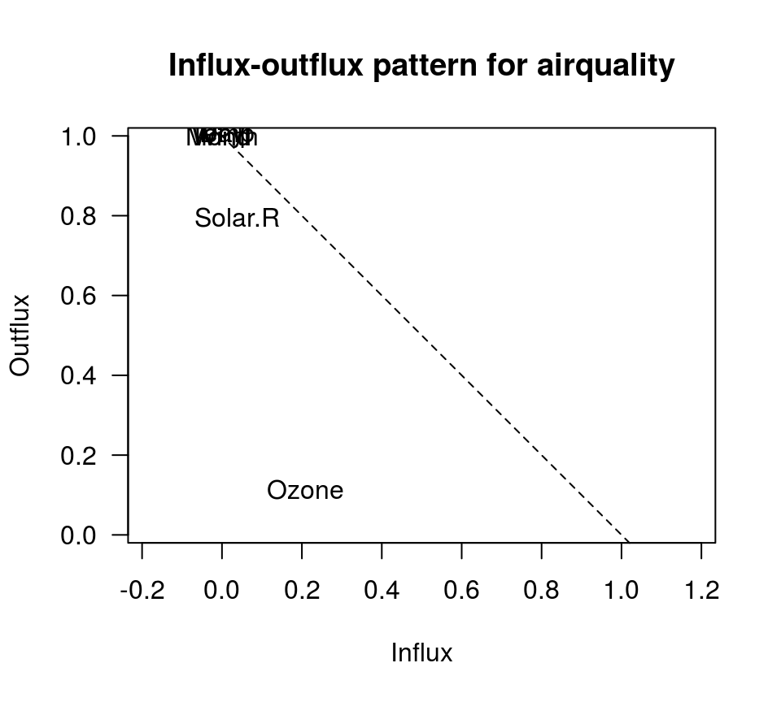
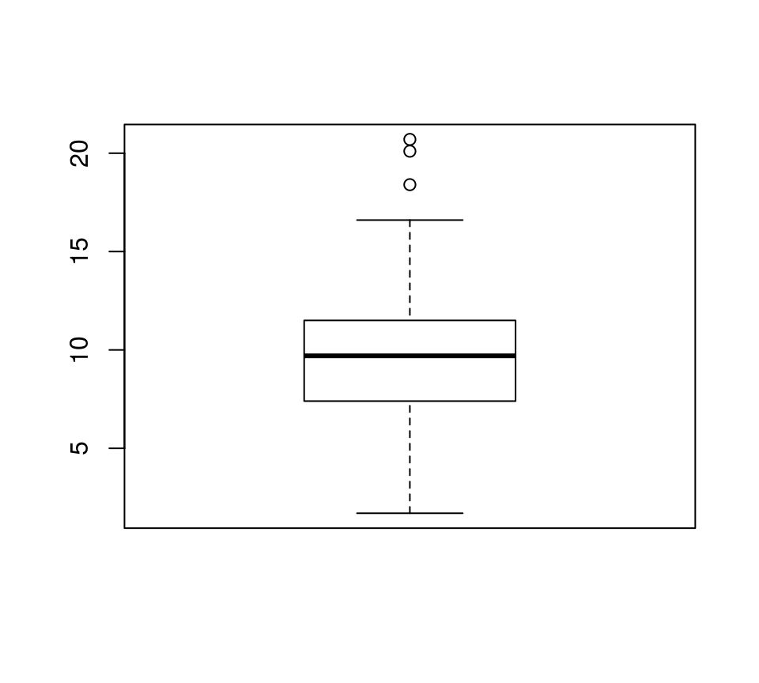
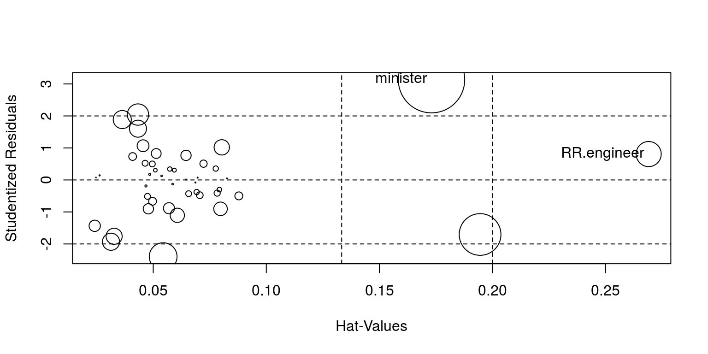
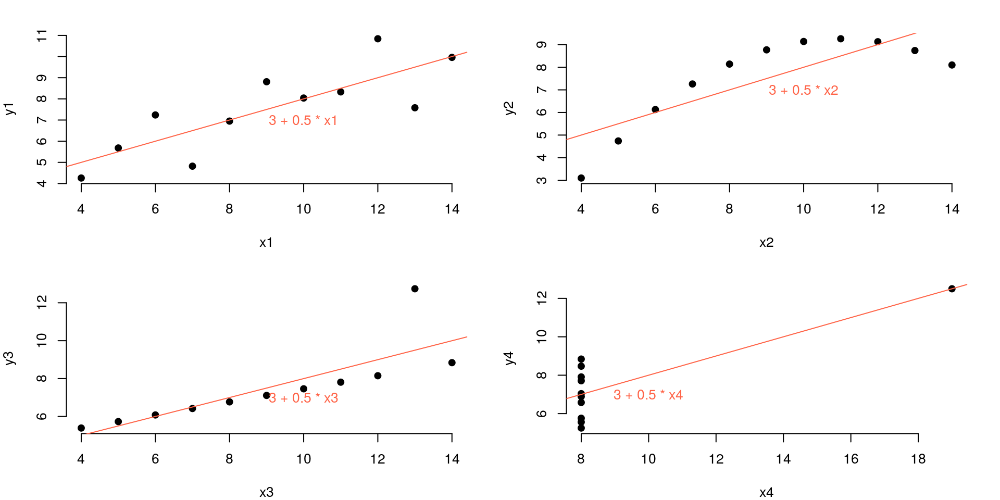
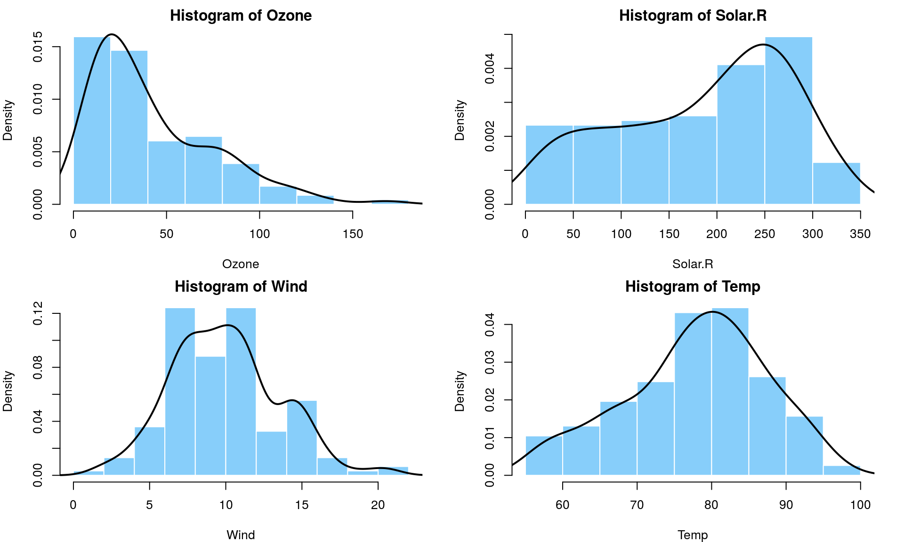
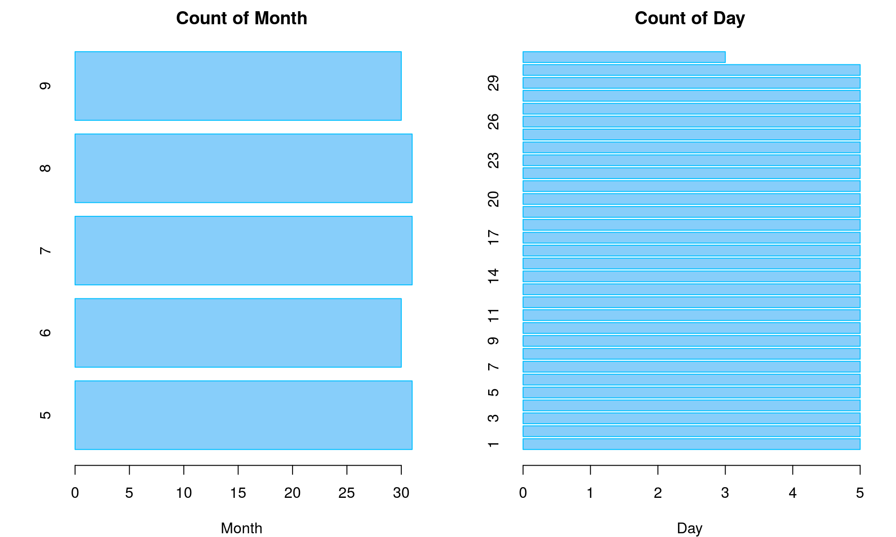

2017-05-20 16:14:53
目录
概述
探索性数据分析(EDA)
目的
- 帮助形成解释观测现象成因的假说
- 对统计推断基础假设进行评估
- 为选取合适的统计工具和技术提供支持
- 为未来通过试验/调查收集数据提供基础
In statistics, exploratory data analysis (EDA) is an approach to analyzing data sets to summarize their main characteristics, often with visual methods. A statistical model can be used or not, but primarily EDA is for seeing what the data can tell us beyond the formal modeling or hypothesis testing task. Exploratory data analysis was promoted by John Tukey to encourage statisticians to explore the data, and possibly formulate hypotheses that could lead to new data collection and experiments. — Wikipedia
基本步骤

数据结构
码本Codebook
码本是数据集的基础说明文档。获得数据后，首先要阅读码本)。
码本描述数据集的内容、结构和版式。
撰写得当的码本"包含了数据文件中每个变量的完整的、自解释(self-explanatory)的信息"1
- 变量名 variable
- 变量标签 variable label
- 变量描述 question text
- 取值 value
- 取值标签 value label
- 统计小结 summary statistics
- <缺失值> missing data
- <跳转逻辑> skip pattern
- <备注> notes
LEXINGTON-FAYETTE POLICE DATA
Police Records for Auto Larceny and Commercial Burglary
Codebook (ROARK SYSTEM) January 01, 1999 – Nov. 12, 2000
EVENTNO Indicates the dispatch number for the event, which
is unique for each call for service.
CASENO Indicates the dispatch number for the event, which
is unique for each call for service.
DATE Indicates the string form of the date that the call
for service took place. For example an event
occurring on Jan 2, 1999 would appear as 19990102.
year Indicates the year in 4 digits that the call for
service took place. For this database, 1999, 2000,
or 2001.
mon Indicates the month in two digits that the call for
service took place.
“01” = January “07” = July
...
“06” = June “12” = December
day Indicates the day in two digits that the call for
service took place.
txtdate Indicates the abbreviated form of the date that
the call for service took place. (mm/dd/yy)自行生成码本
> Hmisc::describe(cars)
cars
2 Variables 50 Observations
---------------------------------------
speed
n missing distinct Info ...
50 0 19 0.996 ...
Value 4 7 8 9 10 ...
Frequency 2 2 1 1 3 ...
Proportion 0.04 0.04 0.02 0.02 0.06 ...
---------------------------------------
dist
n missing distinct Info ...
50 0 35 0.999 ...
lowest : 2 4 10 , highest: ...
---------------------------------------
> memisc::codebook(cars)
========================
speed
------------------------
Storage mode: double
Min.: 4.000
1st Qu.: 12.000
Median: 15.000
Mean: 15.400
3rd Qu.: 19.000
Max.: 25.000
========================
dist
------------------------
Storage mode: double
Min.: 2.000
1st Qu.: 26.000
Median: 36.000
Mean: 42.980
3rd Qu.: 56.000
Max.: 120.000实例
> library(ggplot2) > ?diamonds
A data frame with 53940 rows and 10 variables:
price price in US dollars (\$326–\$18,823)
carat weight of the diamond (0.2–5.01)
cut quality of the cut (Fair, Good, Very Good,
Premium, Ideal)
color diamond colour, from J (worst) to D (best)
clarity a measurement of how clear the diamond is
(I1 (worst), SI1, SI2, VS1, VS2, VVS1,
VVS2, IF (best))
x length in mm (0–10.74)
y width in mm (0–58.9)
z depth in mm (0–31.8)
depth total depth percentage = z / mean(x, y) =
2 * z / (x + y) (43–79)
table width of top of diamond relative to widest
point (43–95)
> str(diamonds) >
Classes ‘tbl_df’, ‘tbl’ and 'data.frame': 53940 obs.
of 10 variables:
$ price : int 326 326 327 334 335 336 336 337 337 ...
$ carat : num 0.23 0.21 0.23 0.29 0.31 0.24 0.24
0.26 0.22 0.23 ...
$ cut : Ord.factor w/ 5 levels "Fair"<"Good"<..:
5 4 2 4 2 3 3 3 1 3 ...
$ color : Ord.factor w/ 7 levels "D"<"E"<"F"<"G"<..:
2 2 2 6 7 7 6 5 2 5 ...
$ clarity: Ord.factor w/ 8 levels "I1"<"SI2"<"SI1"<..:
2 3 5 4 2 6 7 3 4 5 ...
$ x : num 3.95 3.89 4.05 4.2 4.34 3.94 3.95 ...
$ y : num 3.98 3.84 4.07 4.23 4.35 3.96 3.98 ...
$ z : num 2.43 2.31 2.31 2.63 2.75 2.48 2.47 ...
$ depth : num 61.5 59.8 56.9 62.4 63.3 62.8 62.3 ...
$ table : num 55 61 65 58 58 57 57 55 61 61 ...缺失值
缺失的产生及类型
NA的产生
- 机械: 存储失败、系统故障、收集失败等
- 人为: 主观失误、有意隐瞒、历史局限等
NA的类型
- 完全随机缺失(missing completely at random, MCAR): 缺失是完全随机的，不依赖任何可观测/不可观测变量
- 随机缺失(missing at random, MAR): 缺失不是完全随机的，依赖于其他完全变量(如: 男性更倾向于漏答，但与抑郁程度无关)
- 非随机缺失(missing not at random, MNAR): 缺失的值依赖于不完全变量本身缺失的原因(如: 抑郁程度越重，越倾向于漏答)，为不可忽略的无应答。
缺失的影响
- 损失了有用的信息
- 不确定性增加，确定性效应更难把握
- 数据挖掘时，缺失值会使模型拟合失败
> mean(c(1:10, NA)) [1] NA > lm(Solar.R~Ozone, airquality, na.action=NULL) Error in lm.fit(x, y, offset = offset, singular.ok = singular.ok, ...) : NA/NaN/Inf in 'x'
- R处理缺失的基本方法(
optionas("na.action")):"na.omit","na.fail", "na.exclude", "na.pass"
找到缺失
library(mice) md.pattern(airquality)
## Wind Temp Month Day Solar.R Ozone ## 111 1 1 1 1 1 1 0 ## 35 1 1 1 1 1 0 1 ## 5 1 1 1 1 0 1 1 ## 2 1 1 1 1 0 0 2 ## 0 0 0 0 7 37 44
- 完全变量: Wind, Temp, Month, Day
- 完整记录: 72.5%
> sum(complete.cases(airquality))/ + nrow(airquality) [1] 0.7254902
fluxplot(airquality)

缺失是否随机
从月份分布看，缺失不随机
> library(reshape2)
> o <- dcast(airquality, Month ~ is.na(Ozone),
+ length, value.var="Month")
> chisq.test(o[,2:3])
Pearson's Chi-squared test
data: o[, 2:3]
X-squared = 44.751, df = 4, p-value = 4.48e-09

但从气温和风速分布上看，缺失是随机的
> m1 <- t.test(Temp~is.na(Ozone), airquality)
> m2 <- t.test(Wind~is.na(Ozone), airquality)
> t(rbind(unlist(m1[1:4]), unlist(m2[1:4])))
[,1] [,2]
statistic.t -0.02683064 -0.6091059
parameter.df 60.44704944 63.6459520
p.value 0.97868320 0.5446224
conf.int1 -3.64330595 -1.6893132
conf.int2 3.54684742 0.8999377

缺失的处理
- 部分删除(缺失比例较大)
- 删除个案(行)
- 删除变量(列)
- 插补(Imputation)
- 主观处理: 人工填写, 特殊值
- 均值/中位数/众数
- 预测
- 热卡(hotdecking, 同类均值)
- 回归
- 期望值最大化
- 多重插补(mice)
- 机器学习
- k最近邻(kNN)
- 决策树(rpart/C5.0)
- 支持向量机
- 机器学习
- 忽略
- 构建哑元(dummy variable)
- 直接
暴力建模拟合- Bayes网络
- 人工神经网络(ANN)
- 随机森林(rf)
多重插值(Mulivariate Imputation)
imp <- lapply(list(list("pmm", 5), list("pmm", 10), list("rf", 10)), function(lst){
mice(airquality, method=lst[[1]], maxit=lst[[2]], print=FALSE)})
summary(pool(with(imp[[1]], lm(Ozone~Temp+Wind))))
## est se t df Pr(>|t|) lo 95 hi 95 nmis fmi lambda ## (Intercept) -67.409 20.7643 -3.246 110.04 1.549e-03 -108.558 -26.259 NA 0.09920 0.08297 ## Temp 1.781 0.2202 8.087 118.13 6.026e-13 1.345 2.217 0 0.08482 0.06946 ## Wind -2.967 0.6716 -4.418 34.94 9.192e-05 -4.330 -1.604 0 0.31569 0.27761
summary(pool(with(imp[[2]], lm(Ozone~Temp+Wind))))
## est se t df Pr(>|t|) lo 95 hi 95 nmis fmi lambda ## (Intercept) -55.651 19.7734 -2.814 123.15 5.690e-03 -94.791 -16.511 NA 0.07578 0.06090 ## Temp 1.666 0.2085 7.991 136.58 5.005e-13 1.254 2.078 0 0.04943 0.03562 ## Wind -3.227 0.5825 -5.540 95.14 2.679e-07 -4.384 -2.071 0 0.12652 0.10835
summary(pool(with(imp[[3]], lm(Ozone~Temp+Wind))))
## est se t df Pr(>|t|) lo 95 hi 95 nmis fmi lambda ## (Intercept) -68.649 27.6978 -2.478 15.56 2.508e-02 -127.501 -9.796 NA 0.5142 0.4555 ## Temp 1.718 0.2949 5.826 15.80 2.712e-05 1.092 2.344 0 0.5100 0.4516 ## Wind -2.452 0.6780 -3.617 40.33 8.201e-04 -3.822 -1.082 0 0.2858 0.2512


异常值
异常值(Outlier)
- 异常值: 样本中的个别值，其数值明显偏离它（或他们）所属样本的其余观测值，也称异常数据、离群值。
- 测量误差
- 实验方法错误
- 衡量标准
- 正态样本: 3\(\sigma\)
- \(\bar{x} \pm\) 1.5 IQR
- LOF(局部异常因子)
- 可能造成的影响
- 改变模型拟合结果
- 出现奇异梯度，导致算法提前终止
找到异常值
boxplot(airquality$Wind)

- IQR = Q75 - Q25
- 异常值: [Q25 - 1.5*IQR, Q75 + 1.5*IQR]以外的值
> boxplot(airquality$Wind, plot=FALSE)$out [1] 20.1 18.4 20.7
> ub <- quantile(airquality$Wind, 3/4) + + 1.5 * IQR(airquality$Wind) > lb <- quantile(airquality$Wind, 1/4) - + 1.5 * IQR(airquality$Wind) > with(airquality, Wind[Wind>ub | Wind<lb]) [1] 20.1 18.4 20.7
异常值Grubb's检验和处理
> library(outliers)
> grubbs.test(airquality$Wind)
Grubbs test for one outlier
data: airquality$Wind
G = 3.04920, U = 0.93843, p-value = 0.1518
alternative hypothesis: highest value 20.7 is an outlier
最大值20.7不是异常值
处理: 删除、插值、变量变换、更改模型
(引申)模型诊断:异常值、高杠杆值
"RR.engineer"、"minister"两个点对模型有较大影响。
car::influencePlot(lm(prestige ~ income + education, data=car::Duncan))
分布特征
可视化很重要
Anscombe, Francis J. (1973)

定量数据: 直方图 + 核密度曲线
# 调整版面参数
op <- par(mfrow=c(2,2), mar=c(4, 4, 2, 2))
# 循环: 绘制密度直方图，并上覆核密度曲线
for (i in 1:4){
hist(airquality[,i], col="lightskyblue",
main=paste("Histogram of", names(airquality)[i]),
xlab=names(airquality)[i], border="white", prob=TRUE)
lines(density(airquality[,i], na.rm=TRUE), lwd=2)
}
# 重置版面参数
par(op)

定性数据: 条图
# 调整版面参数
op <- par(mfrow=c(1,2), mar=c(4, 4, 2, 2))
# 循环: 绘制条图
for (i in 5:6){
barplot(table(airquality[,i]), col="lightskyblue",
main=paste("Count of", names(airquality)[i]),
xlab=names(airquality)[i], border="deepskyblue", horiz=TRUE)
}
# 重置版面参数
par(op)

Thank you!